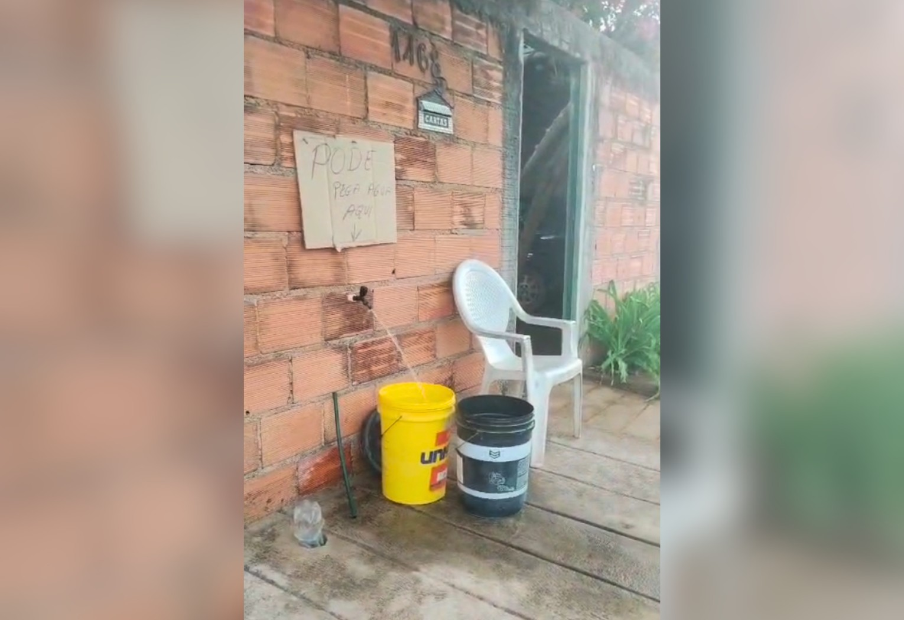
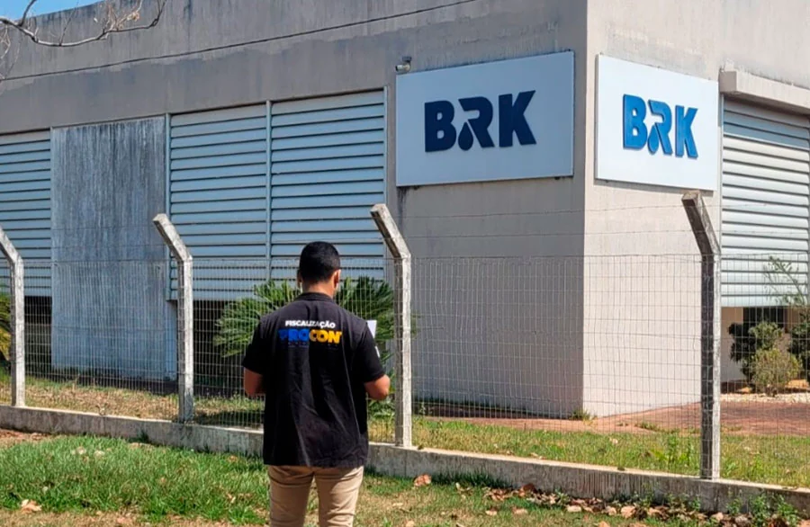
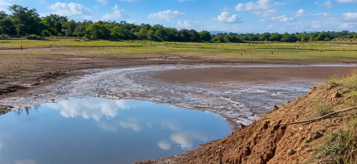
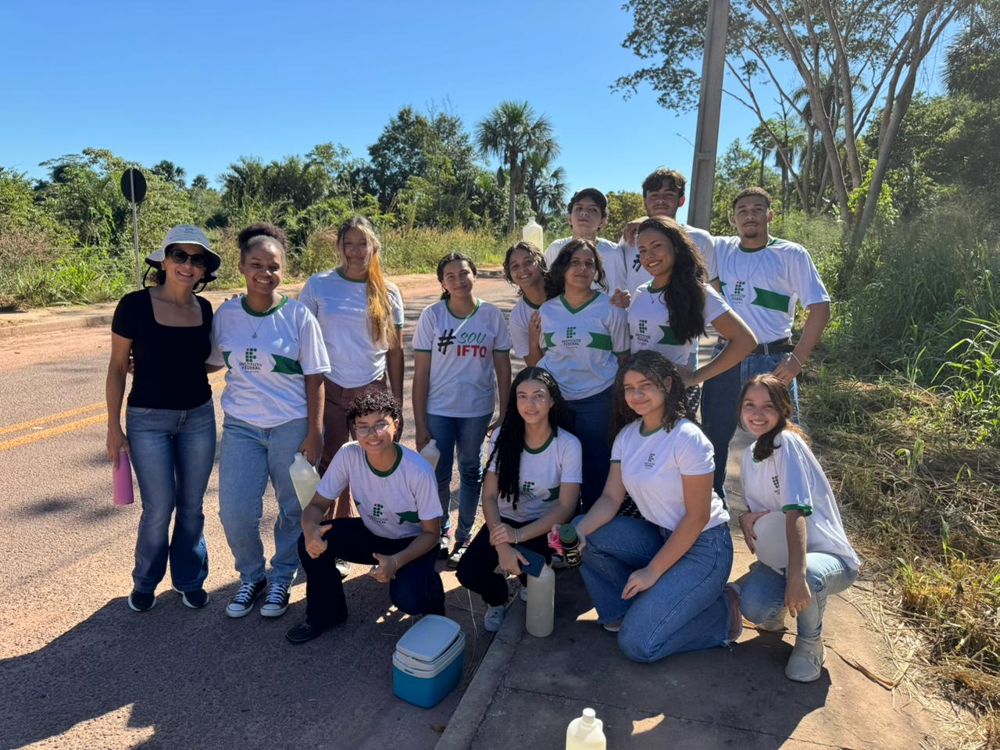
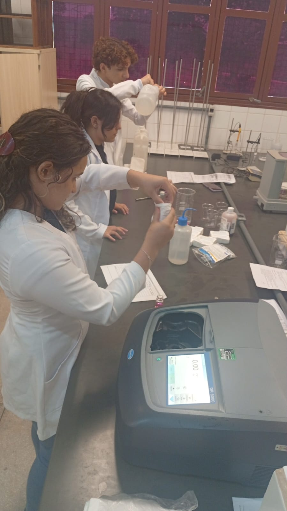
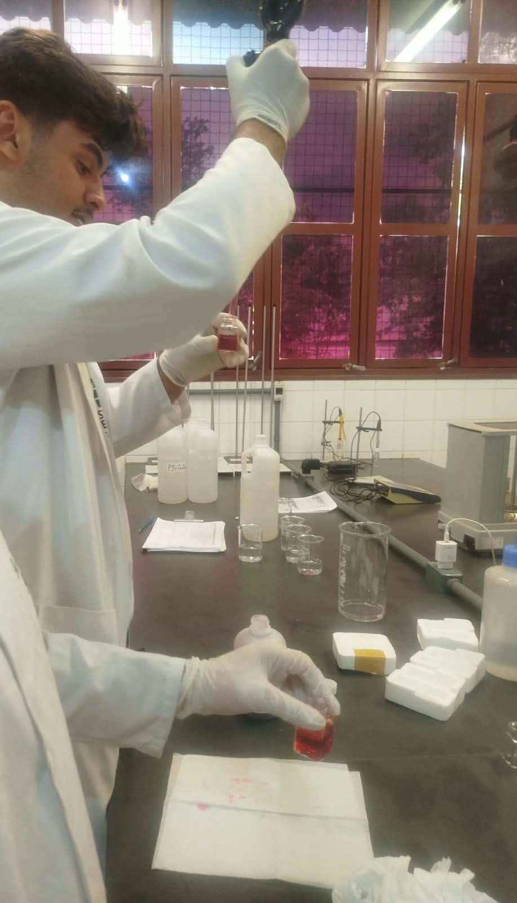

Yporã
Paraíso do Tocantins
O Yporã busca verificar a qualidade da água dos pontos de coleta de Paraíso do Tocantins. O projeto, feito por alunos do Instituto Federal do Tocantins, foi criado para analisar e registrar dados específicos da água fornecida aos moradores de Paraíso, como pH, cloro livre, fluoreto e outros, baseando-se nos dados fornecidos pelo curso de Meio Ambiente do Instituto Federal para chegar a uma estimativa da qualidade da água fornecida à população pelos pontos de coleta.
O projeto também visa conscientizar a população sobre a preservação e os bons meios viáveis para a preservação da água do nosso planeta.
⚠️ Importante ressaltar que nem todos os pontos de coleta de Paraíso foram analisados. Se tiver dúvidas sobre quais pontos já estão prontos, consulte as informações do site.
🕐 Última coleta: Setembro/2026
Clique em um ponto para ver os dados de qualidade da água coletados naquele local de Paraíso do Tocantins.

Resultados do ponto selecionado comparados com os valores máximos permitidos pela Portaria GM/MS nº 888/2021.
| Parâmetro | Resultado | Unidade | VMP (Máximo Permitido) | Status |
|---|
Veja as amostras de água coletadas em cada ponto de coleta (PCQ) de Paraíso do Tocantins. Clique em uma foto para ampliar.
Do Rio do Coco até a torneira: conheça o caminho que a água percorre e os mananciais que abastecem a cidade.
O principal manancial da cidade é o Rio do Coco, afluente da margem direita do Rio Araguaia. Suas nascentes ficam na Serra do Estrondo e sua bacia ocupa cerca de 6.670 km², passando por oito municípios, entre eles Paraíso.
A água bruta é retirada da Barragem do Coco, responsável por cerca de 88% do abastecimento, com apoio de uma captação flutuante usada nos períodos críticos. O Córrego Pernada complementa a vazão, e poços tubulares profundos entram em operação na estiagem.
Na Estação de Tratamento de Água, operada pela BRK Ambiental, a água passa por um tratamento convencional:
A água tratada é armazenada em reservatórios com capacidade de cerca de 3.100 m³ e segue pela rede de distribuição até as casas. Segundo o SNIS (2022), cerca de 97% da população tem acesso à rede de água.
Os 16 Pontos de Coleta de Qualidade espalhados pelos setores verificam se a água que chega às torneiras mantém os padrões de potabilidade da Portaria GM/MS nº 888/2021.

A BRK Ambiental já apontava, em relatório de 2019, que as matas ciliares do Rio do Coco estão ameaçadas pela atividade agropecuária e que o manancial fica eutrofizado entre agosto e setembro, com floração de algas. A vazão do Córrego Pernada também cai em setembro e outubro.
Em 2026, a estiagem prolongada levou a Barragem do Coco ao volume morto em setembro. A cidade passou a ter rodízio de água a partir de 11 de outubro e a prefeitura decretou situação de emergência por 180 dias. Como medidas emergenciais, a BRK ativou poços extras, fez captação complementar no Córrego da Cachorra e na Barragem Pernada e passou a transportar água bruta do Parque das Águas até a ETA.
Fontes: Relatório Anual de Qualidade da Água – BRK Ambiental, Paraíso do Tocantins (2019); SNIS 2022, via Instituto Água e Saneamento; estudo de uso da terra na bacia do Rio do Coco (ResearchGate); Conexão Tocantins; Jornal Opção; Gazeta do Cerrado; Jornal do Tocantins (2026).
Pequenas ações no cotidiano fazem grande diferença para preservar os recursos hídricos da nossa região.
Banhos de até 5 minutos economizam cerca de 80 litros de água. Prefira chuveiros com reguladores de vazão.
Use calhas e cisternas para captar água da chuva. Ela é ótima para regar plantas e lavar calçadas.
Um torneira gotejando pode desperdiçar até 46 litros por dia. Verifique regularmente encanamentos e registros.
A água do enxágue de roupas, por exemplo, pode ser usada para lavar banheiros e áreas externas.
Regue plantas no início da manhã ou fim da tarde para reduzir a evaporação. Use regadores em vez de mangueiras.
Descongele alimentos na geladeira, não em água corrente. Use a água do cozimento de legumes para regar as plantas.
Fique por dentro das principais novidades relacionadas à água, saneamento e sustentabilidade.

Em Paraíso do Tocantins, um servidor instalou uma torneira no muro de casa para doar água aos vizinhos durante o desabastecimento.

Liminar obtida pelo MPTO dá 12 horas para atender unidades essenciais e 24 horas para a população afetada, sem custos.

Com a estiagem, a Barragem do Coco, principal manancial da cidade, opera em volume morto. A prefeitura cobra a suspensão das tarifas da BRK.
O Yporã é uma iniciativa de transparência e conscientização sobre a qualidade da água em Paraíso do Tocantins. Nosso objetivo é aproximar a população dos dados reais de monitoramento, promovendo confiança e educação ambiental.
Responsável pelo monitoramento e análise dos PCQs
Desenvolvimento e manutenção da plataforma digital
Supervisão e apoio institucional do projeto
Instituições e organizações colaboradoras
Atividades de campo, coletas e análises laboratoriais em Paraíso do Tocantins.

Equipe de campo e monitoramento
Análise no laboratório
Preparo e medição de amostras Coleta de amostra em ponto residencial
Coleta de amostra em ponto residencial
 Coleta de água em torneira
Coleta de água em torneira